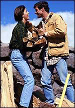

|
IT
CHIK-A
Mountaineers
on a roll
Mukhang pang Xtreme games na rin ang 2 myembrong ito ng ITC,
at sumasali na sila sa mga Xtreme isports gaya ng mountain
climbing. Balita namin ay on the lookout for the perfect girl,
hehehe. Mountaineer girl nga kaya ang makuha nila? Ang isang
mountaineer ay nabalitaang may nakatabing magandang dilag
at nagpaakbay pa nga raw ang dilag na ito. Hmmm, ano kaya
ang ibig sabihin nun? Hintayin ang susunod na kabanata.
|
|
Tara
na sa outing!
Mukhang ang isang grupo ng ITPs na nag-outing kamakailan
lang ay masayang masaya. Isang guwapito at isang mestiza
ang nag- enjoy daw sa outing na ito dahil bukod sa mga
sites na nakita nila ay may na- meet din silang mga
potential girlfriend at boyfriend. Ma-develop kaya ito
o hanggang potential na lang? Sana ay magkatuluyan para
madagdagan ang ating mga chik-a. Hintayin na lang natin
ang kanilang mga ekspedisyon. Sama na rin tayong lahat
sa susunod.
|
Txt
mate!
Sino ba itong character na ito ang ating nabalitaan na may
bagong textmate? ayun sa ating very reliable na bubwit, mukhang
napaibig nitong si mr. 0123 ang kanyang textmate dahil panay
ang padala nito ng messages at email. at balita namin ay nagpadala
na raw ito ng kanyang larawan. mr. 0123, ipakita mo naman
sa amin ang picture ni ms txtmate at nang ating mabistahan!
Kaluluwa ni andres, sumapi
sa iba!
Sa ating mga toning (trance) sessions with johnny midnight,
nakadaupang-palad natin ang espiritu ni andres at naichika
niya sa atin na siya raw ay sumapi na sa isang binata. eto
raw binata na ito na itatago natin sa pangalang hugh hefner
ay sinapian lamang nitong nakaraang buwan. kakaibang pagbabago
sa ugali ang agad na namalas sa binatang ito gaya ng pangi-indyan
sa kanyang mga lakad at mga kaibigan, at kakaibang interes
sa html! hanggang kailan kaya mananatili ang espiritu ni andres
dito kay pareng hugh hefner? ang kinakatakot lamang ng lahat
ay baka kung kanino sumunod na sumapi itong si andres. tsk!
tsk! tsk!
Working
after 6
Marami na ang nagiging health buff sa mga ITP's. Ilan sa mga
guys ang nagpapalaki ng mga B _ _ _ _ , ( ooops Biceps...anong
iniisip ninyo? ). Ang isa ay seryosong seryoso na pagkatapos
ng work outs ay nagkakasakit.
Nasosobrahan na kaya sya? Maging habulin na kaya sya dahil
sa bago nyang katawan? Hmm, abangan nyo na lang sya sa summer
pag suot na nya ang kanyang swimwear.
|